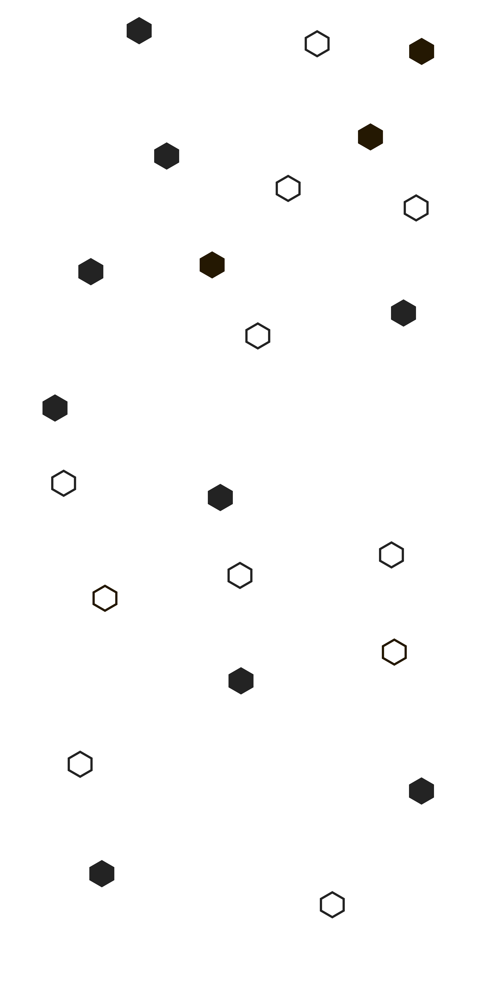
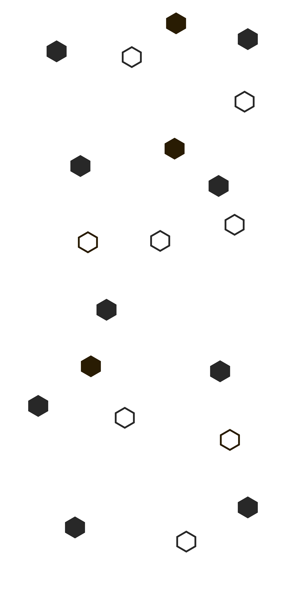
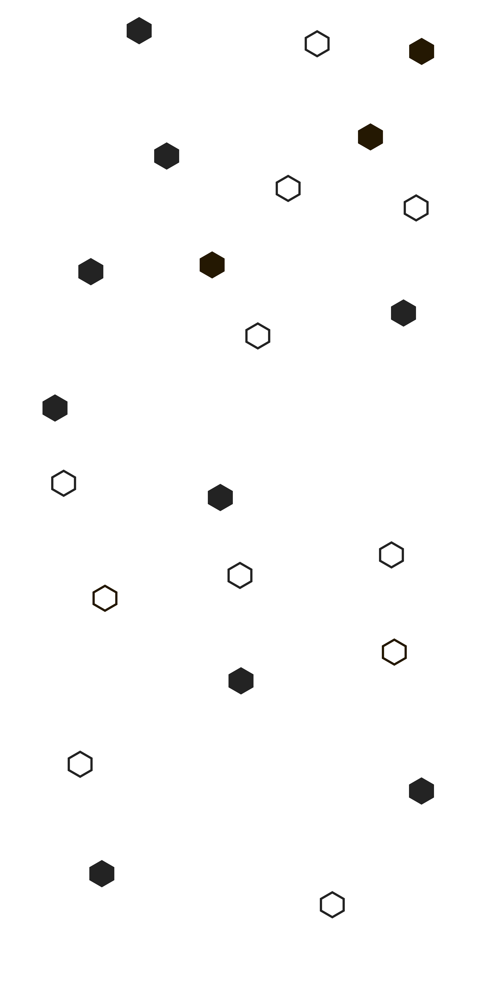
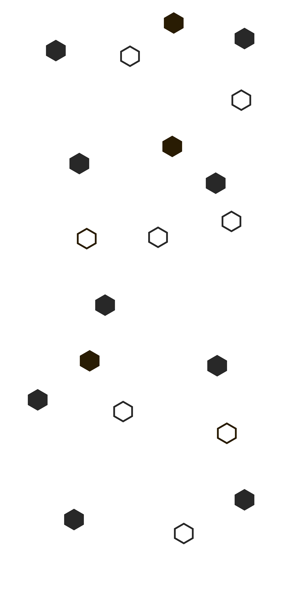

Witam. Nazywam się Krzysztof Kazanecki i jestem pasjonatem
programowania z ambicją rozwijania się jako back-end developer.
Od zawsze fascynowała mnie magia tworzenia oprogramowania, która
pozwala nam przekształcać koncepcje w funkcjonujące,
interaktywne rozwiązania.
W trakcie mojej edukacji zdobyłem solidne podstawy
programowania, a także praktyczne doświadczenie podczas
tworzenia projektów, które realizowałem samodzielnie. Skupiłem
się głównie na językach takich jak C++ oraz Java, zdobywając
umiejętności w obszarze back-endu oraz optymalizacji kodu.
Oprócz tego, coraz swobodniej posługuję się tworzeniem stron
internetowych, co zaowocowało powstaniem tej, na której obecnie
się znajdujesz.
Mój cel to wkroczenie w świat zawodowego rozwoju jako back-end
developer. Posiadam umiejętność szybkiego przyswajania nowych
technologii, jestem gotów do nauki i wykorzystania swoich
zdolności do tworzenia efektywnych i efektownych rozwiązań.
Chciałbym dołączyć do zespołu, w którym mogę rozwijać się
zawodowo, dzielić się wiedzą i tworzyć innowacyjne aplikacje.
Zapraszam Cię do zapoznania się z moim portfolio oraz do
kontaktu, abyśmy mogli omówić, jak mogę przyczynić się do
rozwoju Twojej firmy.
Moja ścieżka edukacyjna była niezwykle bogata, co udoskonaliło
moje doświadczenie i umiejętności. Rozpocząłem naukę w
technikum chemicznym, gdzie zdobyłem solidne fundamenty w
dziedzinie chemii.
Następnie, zdecydowałem się na studia chemiczne na Wojskowej
Akademii Technicznej, gdzie zdobyłem stopień inżyniera, a
później kontynuowałem naukę, zdobywając stopień magistra. Ten
okres nauki dostarczył mi głębokiego zrozumienia nauk
przyrodniczych, rozwiniętych umiejętności badawczych oraz
uczynił mnie specjalistą ds. syntezy organicznej.
Jednakże, po ukończeniu studiów, zdecydowałem się na radykalną
zmianę kierunku kariery. Zainspirowany pasją do programowania,
postanowiłem zostać programistą. To wyzwanie pozwoliło mi
na zdobycie nowych umiejętności w dziedzinie informatyki,
a także na rozwijanie się jako kandydat na back-end
developera.
Osiągnąłem bogate oraz uniwersalne doświadczenie zawodowe
podczas pięcioletniej pracy w McDonald's, gdzie awansowałem
na stanowisko instruktora restauracji. W mojej roli,
odpowiedzialny byłem za kluczowe aspekty operacyjne, obejmujące
zarządzanie dostawami do restauracji, przeprowadzanie
skutecznych szkoleń dla pracowników na nowych stanowiskach oraz
nieustanne nadzorowanie jakości i przestrzegania najwyższych
standardów.
Praca w dynamicznym środowisku takim, jak McDonald's, była nie
tylko wyzwaniem, ale także doskonałym świadectwem moich
umiejętności radzenia sobie ze stresem, pracy w zespole oraz
efektywnego działania pod presją czasu. Opanowanie tych
umiejętności było nieodzowne, aby sprostać wymaganiom
restauracji, utrzymując jednocześnie najwyższe standardy obsługi
i jakości produktów.
Doświadczenie w McDonald's nie tylko zaostrzyło moje
umiejętności zawodowe, ale również wykształciło we mnie zdolność
skutecznego zarządzania zasobami, komunikacji z różnymi
członkami zespołu oraz podejmowania szybkich i trafnych decyzji.
To doświadczenie stało się fundamentem dla mojego rozwoju
zawodowego, dostarczając wiedzy i umiejętności, które jestem
pewien, będą wartościowe w mojej dalszej karierze zawodowej.
W ciągu półtora roku mojej pracy w wytwórni aromatów spożywczych
zdobyłem cenne doświadczenie, które obejmowało różnorodne
obowiązki. W początkowym okresie zajmowałem się wytwarzaniem
aromatów, co wymagało ode mnie nie tylko staranności, ale także
precyzji w odmierzaniu składników. Wyzwanie to polegało na
utrzymaniu najwyższej jakości produktów poprzez dokładne i
zgodne z recepturą mieszanie składników, co podkreślało moje
umiejętności precyzyjnej pracy.
W miarę upływu czasu, po przeprowadzce firmy do nowej siedziby,
moje zadania ewoluowały. Została mi powierzona kalibracji oraz
uruchomieniu innowacyjnego automatu, który miał
zrewolucjonizować produkcję aromatów na większą skalę.
W tej roli musiałem wykazać się nie tylko zdolnościami
technicznymi, ale również umiejętnością skomplikowanego
planowania i organizacji. Odpowiadałem za dostosowanie maszyny
do specyfikacji, a także za programowanie i testowanie jej
funkcji zgodnie z zadanymi recepturami. W tej dynamicznej roli
doceniłem znaczenie elastyczności, kreatywności i dokładności w
rozwiązywaniu problemów, co pozwoliło mi skutecznie sprostać
nowym wyzwaniom.